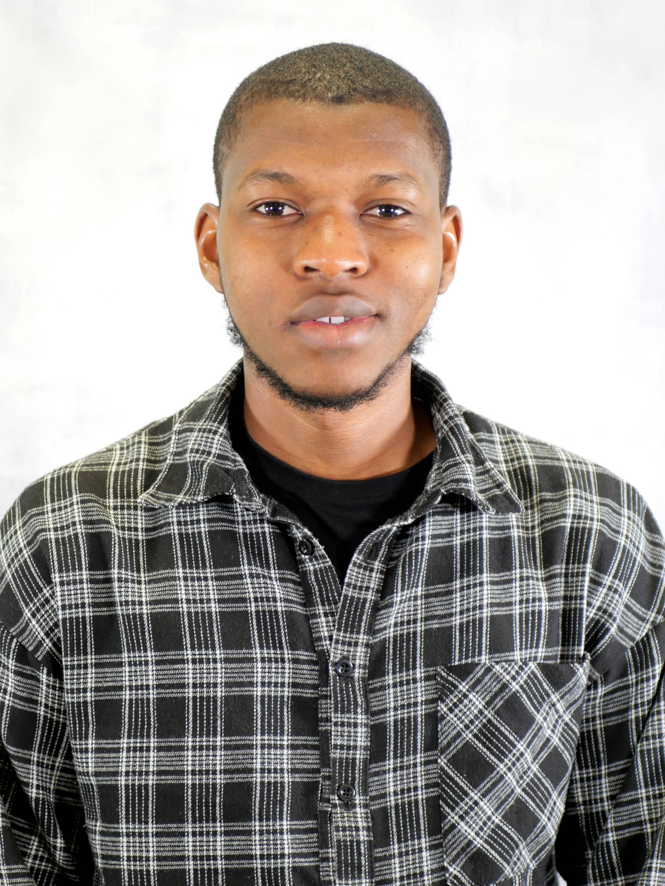
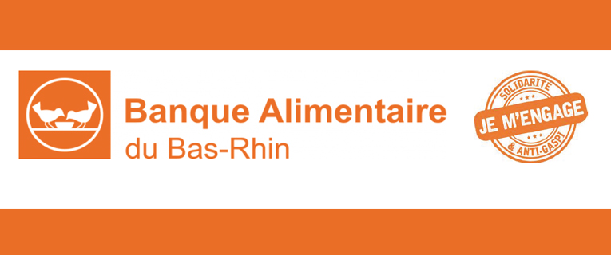
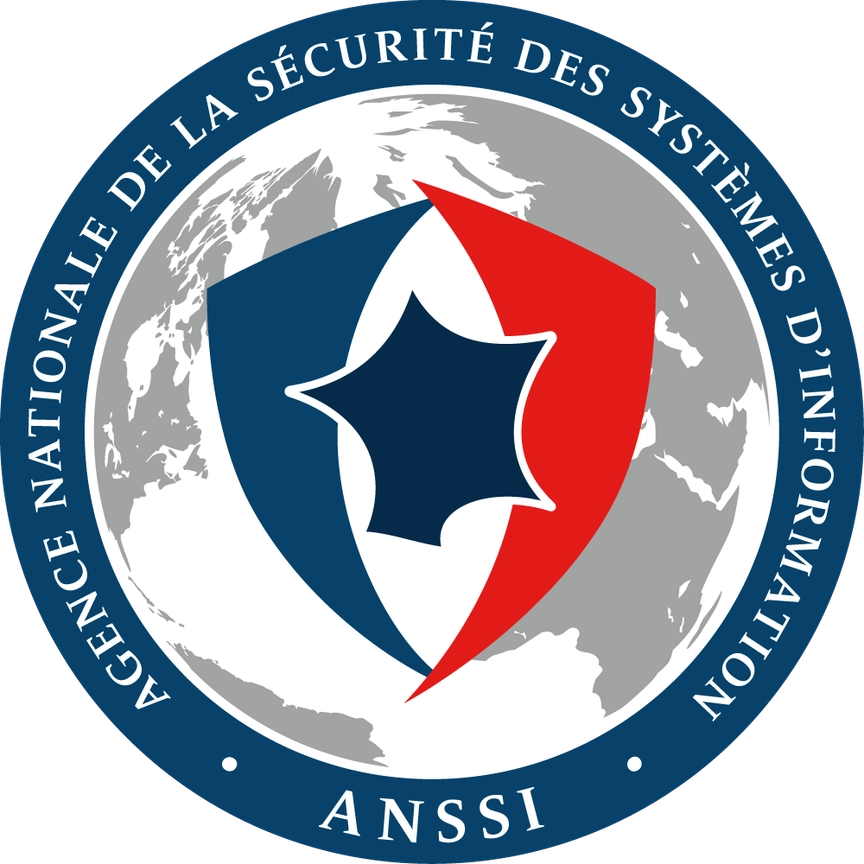

Étudiant BUT Réseaux & Télécommunications · Parcours Développement Système et Cloud · IUT de Colmar
Je m'appelle Ibrahima SOUARE, j'ai 22 ans et je suis étudiant en 2ème année de BUT Réseaux et Télécommunications, parcours Développement Système et Cloud, à l'IUT de Colmar. Originaire du Sénégal, j'ai commencé ma formation en France à l'IUT de Roanne avant de rejoindre Colmar. Ce qui me passionne, c'est l'informatique dans sa globalité : les réseaux, les systèmes, le cloud, la cybersécurité, l'automatisation et les infrastructures. Actuellement en stage à la Banque Alimentaire du Bas-Rhin, je travaille sur des sujets concrets au quotidien. En troisième année, je recherche une alternance pour continuer à progresser en entreprise.
L'informatique, c'est ma passion et mon métier de demain. Ce qui m'a attiré dans ce domaine, c'est la profondeur : comprendre comment un réseau fonctionne réellement, de bout en bout, pas juste en surface.
Je suis curieux par nature et j'apprends vite. Quand je commence quelque chose, je veux comprendre pourquoi ça fonctionne, pas seulement comment l'utiliser. Cette façon de travailler, je l'applique dans tous mes projets, en cours comme en entreprise.
Je suis ambitieux et je le vis simplement : chaque stage, chaque SAE, chaque projet est une occasion d'aller plus loin. La connaissance, c'est ce qui fait la différence et c'est ce que je construis chaque jour.
Originaire du Sénégal, j'ai grandi dans une famille de cultivateurs. Toute mon enfance, j'ai travaillé aux champs avec mon père : l'arachide, le riz, le maïs. Cette expérience m'a appris la valeur du travail, la patience et la persévérance. Depuis 2024, je suis en France pour poursuivre mes études, mais ces valeurs m'accompagnent chaque jour.
En dehors de l'informatique, je joue au football et je suis impliqué dans l'association sénégalaise de Roanne et de Colmar.
Ce stage m'a confronté à des situations que l'école ne reproduit pas. Sur chaque mission, j'ai rencontré un problème que je n'avais pas anticipé : un décalage de fuseau horaire dans Docker, une règle de sécurité Google qui bloquait silencieusement l'envoi des scans, une infrastructure téléphonique désynchronisée après une coupure de courant. Dans chaque cas, j'ai dû diagnostiquer, trouver la cause et documenter la solution pour qu'elle soit réutilisable. J'ai appris que sur le terrain, administrer un système demande autant de méthode que de capacité à résoudre des problèmes imprévus. C'est un savoir-faire applicable dans n'importe quel environnement professionnel.
La partie la plus difficile a été la coordination avec mes collègues. Mon plan d'adressage LAN devait coller exactement avec la partie services et la partie interconnexion réalisées par les autres. J'ai appris à documenter mes choix techniques pour que les autres puissent s'y appuyer sans ambiguité. Sur ma partie, j'ai dû prendre des décisions techniques seul : le choix de l'architecture hiérarchique, la configuration VRRP pour la haute disponibilité, la gestion du MSTP. Chaque décision avait un impact sur le reste du projet. C'est là que j'ai compris qu'un réseau ne se configure pas en silo : tout est lié dès la conception.
La principale difficulté sur ce projet c'est les tests multi-VM. Mon PC n'avait que 8 Go de RAM, quand j'allumais les 3 VM en même temps il s'éteignait. Comme le projet a démarré avant les vacances de décembre, je ne pouvais pas utiliser les PC de l'IUT. J'ai investi dans un nouveau PC avec 32 Go de RAM pour avancer. Ce projet m'a appris ce que signifie vraiment travailler seul de A à Z. En stage, développer un script batch pour un vrai environnement professionnel m'a montré que l'automatisation c'est avant tout comprendre un besoin et y répondre de façon fiable.
Ce projet était entièrement sur papier, sans manipulation directe des outils. La difficulté était de penser l'infrastructure dans sa globalité : choisir les bons composants, anticiper les pannes, respecter un RPO d'une heure, tout en restant dans un budget réaliste. J'ai appris à raisonner comme un architecte système, à justifier chaque choix technique devant un jury. C'est une compétence différente de la configuration : c'est savoir concevoir avant de déployer.
C'était la première fois que je développais un système où plusieurs technologies devaient fonctionner ensemble en temps réel. La difficulté principale était de synchroniser l'état des LEDs entre le bouton physique, l'interface web et les plages horaires sans conflit. J'ai compris qu'une application connectée ce n'est pas juste du code, c'est faire dialoguer des environnements qui ont chacun leur propre logique. Ce savoir-faire est applicable dans tout projet IoT ou infrastructure connectée.

AC21.01 | Configurer et dépanner le routage dynamique dans un réseau
AC21.02 | Configurer et expliquer une politique simple de QoS et les fonctions de base de la sécurité d'un réseau
AC21.03 | Déployer des postes clients et des solutions virtualisées adaptées à une situation donnée
AC21.04 | Déployer des services réseaux avancés
AC21.05 | Identifier les réseaux opérateurs et l'architecture d'Internet
AC21.06 | Travailler en équipe pour développer ses compétences professionnelles
AC22.02 | Mettre en place un accès distant sécurisé
AC22.03 | Mettre en place une connexion multi-site via un réseau opérateur
AC24.02DevCloud | Virtualiser un environnement
Ce projet m'a permis de mettre en pratique pour la première fois une infrastructure réseau complète en conditions réelles. Concevoir le plan d'adressage IP pour deux entreprises sur trois sites, c'était un vrai travail de réflexion : chaque VLAN, chaque masque devait respecter une logique précise.
La difficulté principale était la coordination au sein du groupe. Ma partie LAN devait être cohérente avec la partie services et la partie interconnexion réalisées par mes collègues. Ca m'a appris à communiquer techniquement, expliquer mes choix d'adressage pour que les autres puissent s'y appuyer.
Etre responsable de la partie LAN m'a aussi appris à prendre des décisions seul sur des choix techniques importants : l'architecture hiérarchique, le choix du MSTP, la configuration VRRP pour la haute disponibilité. Chaque décision avait un impact sur tout le reste du projet.
Ce que je retiens surtout : un réseau ne se configure pas par morceaux isolés. Tout est lié, et c'est en travaillant sur ce projet que j'ai vraiment compris la logique globale d'une infrastructure réseau d'entreprise.
AC23.01 | Automatiser l'administration système avec des scripts
AC23.02 | Développer une application à partir d'un cahier des charges donné, pour le Web ou les périphériques mobiles
AC23.03 | Utiliser un protocole réseau pour programmer une application client/serveur
AC23.04 | Installer, administrer un système de gestion de données
AC23.05 | Accéder à un ensemble de données depuis une application et/ou un site web
Ce projet m'a beaucoup appris. Avant de le commencer, j'avais déjà effleuré la cryptographie en première année, mais jamais à ce niveau de profondeur. Les sockets réseau en Python étaient également nouveaux pour moi. Comprendre comment un message peut traverser plusieurs routeurs sans qu'on puisse savoir d'où il vient m'a vraiment fasciné. Implémenter ça moi-même, couche par couche, c'était un vrai défi technique.
La difficulté principale que j'ai rencontrée, c'est les tests sur plusieurs machines virtuelles. Mon PC personnel n'avait pas assez de ressources pour faire tourner 3 VM en même temps - il plantait et buggait. Le projet a commencé juste avant les vacances de décembre, donc je ne pouvais pas utiliser les PC de l'IUT. J'ai fini par investir dans un nouveau PC avec 32 Go de RAM et 1 To de stockage pour pouvoir tester correctement.
Ce projet m'a aussi appris l'autonomie. Travailler seul de A à Z - conception, développement, tests, documentation, déploiement - c'est une expérience complète. J'ai dû prendre toutes les décisions moi-même, résoudre tous les problèmes moi-même, et avancer sans pouvoir compter sur quelqu'un d'autre.
Aujourd'hui je sais déployer une application sur plusieurs machines virtuelles qui communiquent entre elles en réseau. C'est une compétence concrète que je peux réutiliser dans n'importe quel projet d'infrastructure.
AC21.06 | Travailler en équipe pour développer ses compétences professionnelles
AC22.05 | Capacité à questionner un cahier des charges RT
AC23.02 | Développer une application à partir d'un cahier des charges donné, pour le Web ou les périphériques mobiles
AC23.03 | Utiliser un protocole réseau pour programmer une application client/serveur
AC23.04 | Installer, administrer un système de gestion de données
AC23.05 | Accéder à un ensemble de données depuis une application et/ou un site web
C'était la première fois que je développais une application web connectée à un système embarqué réel. La difficulté principale était de faire communiquer Django, MQTT et les ESP8266 en même temps, de manière fluide. Il fallait que l'interface web reflète l'état réel des LEDs sans délai visible. Ce projet m'a appris à travailler à l'interface entre le développement logiciel et le matériel, deux mondes qui ont leurs propres contraintes et qu'il faut apprendre à faire dialoguer.
AC24.01DevCloud | Proposer une solution Cloud adaptée à l'entreprise
AC24.02DevCloud | Virtualiser un environnement
AC24.04DevCloud | Analyser un service Cloud au travers des métriques
AC25.02DevCloud | Mettre en production une application
Ce projet m'a appris à penser une infrastructure dans sa globalité, avant même de toucher aux outils. Il fallait choisir les bons composants, anticiper les pannes, respecter un RPO d'une heure, tout en restant dans un budget réaliste. Chaque choix technique devait être justifié et défendu devant un jury, ce qui m'a obligé à comprendre en profondeur les compromis entre performance, coût et fiabilité. J'ai appris à raisonner comme un architecte système : c'est une compétence différente de la configuration, c'est savoir concevoir une solution avant de la déployer.
AC11.03 | Configurer les fonctions de base du réseau local
AC11.04 | Maîtriser les rôles et les principes fondamentaux des systèmes d'exploitation afin d'interagir avec ceux-ci pour la configuration et l'administration des réseaux et services fournis
AC13.01 | Utiliser un système informatique et ses outils
AC13.02 | Lire, exécuter, corriger et modifier un programme
AC13.03 | Traduire un algorithme, dans un langage et pour un environnement donné
AC13.04 | Connaître l'architecture et les technologies d'un site Web
Ce projet m'a appris à passer d'un environnement à un autre sans perdre la logique de ce que je voulais faire. Sur la partie infrastructure, configurer Active Directory en ligne de commande avec Samba4 a été la partie la plus exigeante : chaque commande devait être comprise avant d'être exécutée, sans interface graphique pour vérifier visuellement les erreurs. Sur la partie créative, le plus intéressant a été de prendre un même algorithme de génération de motifs et de le réécrire dans un autre langage, en passant de Python à JavaScript, tout en gardant l'esprit de l'œuvre originale. J'ai compris qu'un même problème peut se résoudre de plusieurs façons selon l'environnement, et que la vraie compétence c'est de comprendre la logique derrière le code, pas seulement la syntaxe d'un langage.
